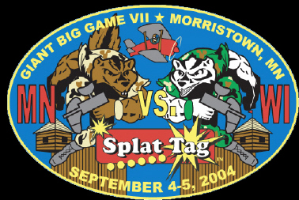
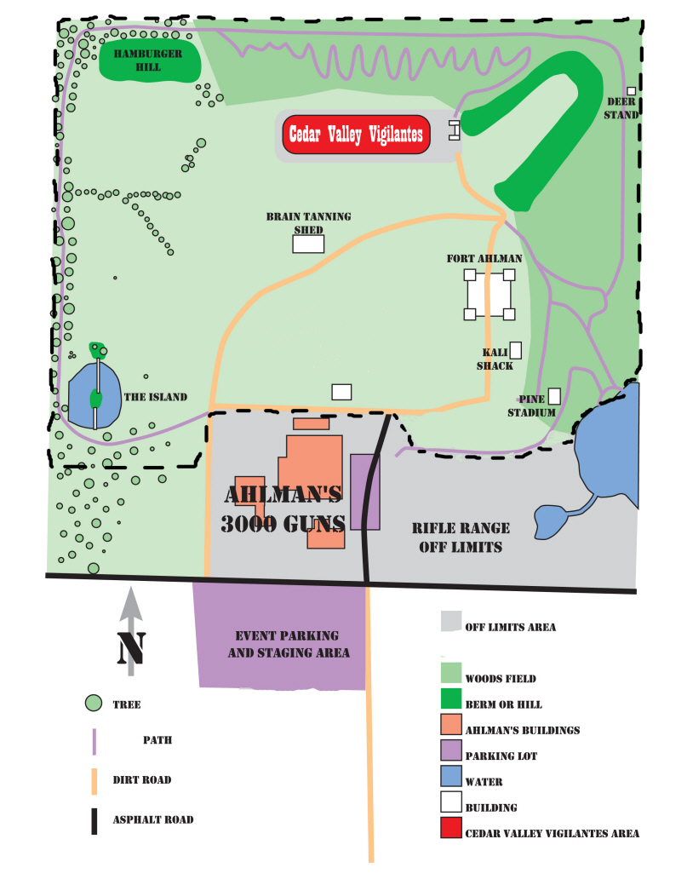
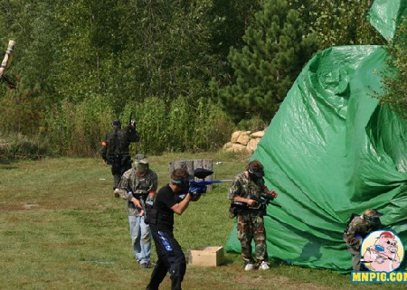
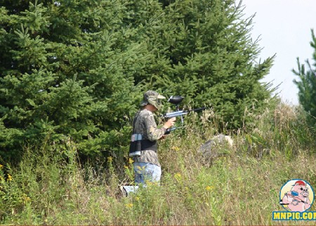
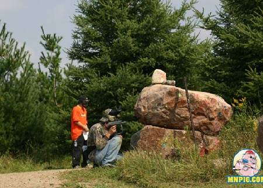

Story
(from the web site)
The year is 2017 - Four years after a massive asteroid collided with earth, destroying the entire eastern seaboard, eliminating our federal government, crippling our economy, and throwing the entire world into the chaos of a nuclear winter. The United States Federal Government was officially disbanded and governing responsibilities where handed down to the states & local level governments. Tensions rose as the remaining states in the former U.S. sealed their borders, organized their own military forces, and shored up their defenses to protect their natural resources and ensure the safety of their citizens.
Border tensions between the two great states of Wisconsin and Minnesota have gotten out of control as of late due to increased recon missions both states have been conducting on each other to asses military strengths and weaknesses. Senior military officials from Minnesota concluded that Wisconsin needed to be dealt with on a pro-active basis immediately in order to maintain secure borders. Minnesota struck first with its Fast Attack Force driving deep into Wisconsin territory. But Wisconsin would not fade quietly into the night and struck back with their rapid response unit to quickly halt the invading forces advance. The battle stalemated with massive losses to both sides. Decisive action is needed soon to break the other sides defenses and ensure victory for either Minnesota or Wisconsin. This is where the next and perhaps final chapter of our story begins....
The massive troop losses taken during the initial battle is cause of great concern to senior military officials on both sides of this conflict. Additional military reinforcements are on their way to the front lines to fortify and solidify positions. However, the estimate on their arrival is unknown. To ensure the proper level of support for their front line positions, both Minnesota and Wisconsin have put the word out to all citizens to bear arms and support their state in this conflict. Who will answer the call and join their fellow statesmen in this time of greatest need?
Field Map

Pictures
Pictures from the MNpig
Giant Big Game VII Gallery:


